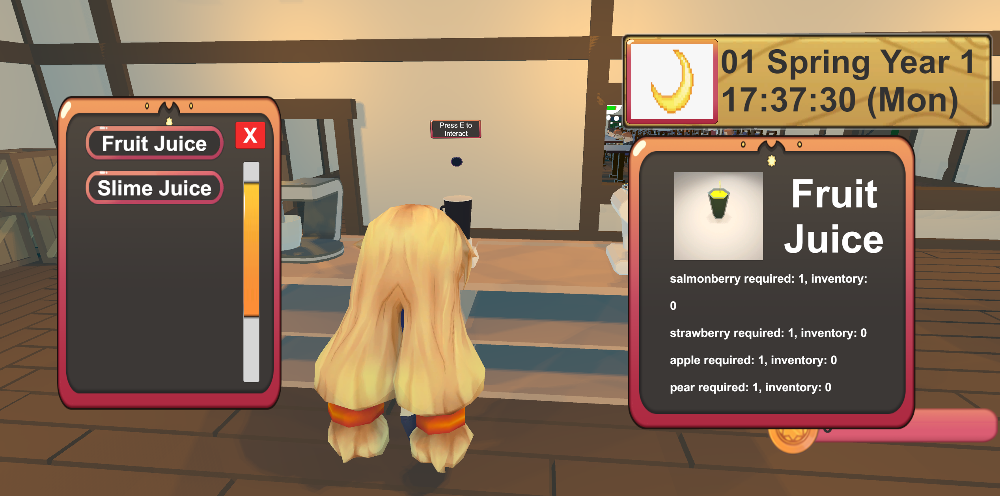
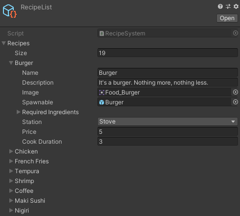
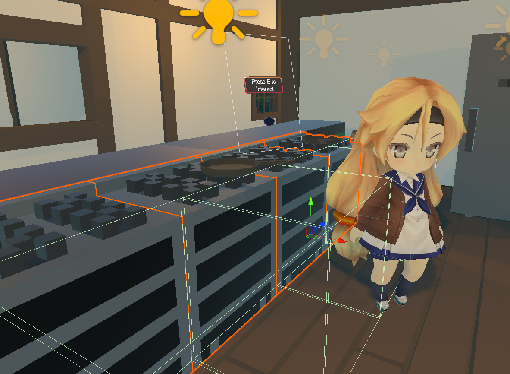

Beastro is a restaurant management game where you hunt and farm the ingredients for the food you make. There are three main areas: the restaurant, the farm, and the hunting area. In the restaurant, during business hours, customers will come in and place orders. The player needs to go to the appropriate cooking station to prepare the order and bring it to the customer in a timely manner. In the farm you can plant different seeds and trees, water and fertilize them. After some time the crops will be ready and you can reap the ingredients. In the hunting area you can fight various fantasy monsters and collect their drops. You can also find berry bushes and salt deposits to collect those ingredients.
This game was made in my capstone for the Game Programming sequence at Kent State. I worked on a team with 10 programmers over the internet (via Discord and GitHub). We split into three groups, one for each of the main areas of the game; my group was in charge of the restaurant itself. I made many of the major systems at play in the restaurant area including the recipe system, the cooking stations, and much of the customer logic. I also worked on some systems that were used throughout the project such as the interactive object system, the level loader, and the inventory.
One of my major contributions to the restaurant was the recipe system (view code). This took the form of a scriptable object that holds a list of all the recipes in the game. This means it could be passed off to whatever object needed that information without any worry of duplicated information becoming outdated. In this way it served as a single source of truth for what recipes could be made. This system interacts with the cooking stations (which need to display what can be made), the customers (who need to know what they can order), and the menu (so that the player can see what ingredients they need while out and about).
Using a scriptable object made it easy for other team members to append new recipes by just adding a prefab, image, and some other values under a new entry (pictured below). I set this up so that the menu for a cooking station would fill up automatically with everything on the recipe list that was for that station (pictured above), and the info that shows when hovering is grabbed from here as well.
One of the actions the player can do all over the game is interact with objects. We needed a universal way for this to work between all interactive objects so that there would be issues with interacting with the wrong object, or even multiple at once. We needed to have a system that was easy to have any object work with, which would allow for a pop up to show what you would interact with, and would allow for varying types of objects. I made the Interactive class, which handles all of this quite nicely.
This Interactive class (view code) is inherited by every object that you can interact with in the entire game. It requires a collision box to define the area the player needs to be to activate it. Whenever the player steps inside this box, that object is added to a static list that keeps track of all the interactive objects for which the player is in bounds (usually only a couple objects at a time). When the player presses the interact key, it will figure out what object is closest and call OnInteract on it, which is a virtual method: defined in the derived class. On the stove (pictured below), for example, pressing interact will bring up the recipe menu populated with the stove’s recipes. After you’ve selected something to make and it finishes cooking, you can press interact on it again to pick up the food.
One of the biggest challenges we faced in my subgroup was a mass accumulation of technical debt. One specific example of this is the cooking stations. Originally different people were making different cooking stations that were mostly the same, but had entirely different code and all the menus were hand populated. When we realized just how many of them we were going to have in the game, I made the Station class, which reduced all of the stations to their common logic, as well as a system to auto-populate the recipe menu for each station from the recipe list. This meant that going forward, making a new cooking station was a pretty straightforward process. However, since we didn’t do this right away, there was a lot of wrangling that needed to be done to get it working, and a lot of code that had already been written was made irrelevant. If we took the time to plan ahead it would have saved us a lot of work hours.
Working on this team was definitely a unique experience for me. I had worked on team projects before, in and out of class, but never with so many people and all of the same discipline. The course had to be done remotely, meetings and instruction were mostly handled over Discord. I still found a lot of enjoyment in creating something with my peers. There were many communication challenges with running a remote course, but we rose to the occasion. This was a large project to complete over a semester and we couldn’t have done it without excellent coordination.